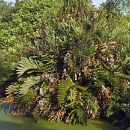
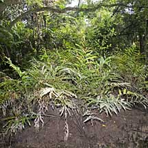
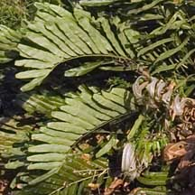
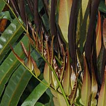
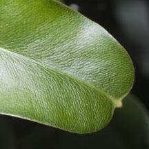
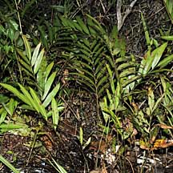
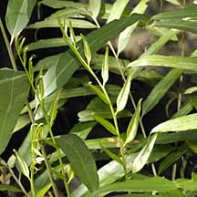
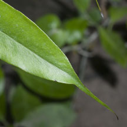

|
|
| plants text index | photo index |
| mangroves |
| Mangrove
ferns Acrostichum sp. Family Pteridaceae updated Jan 2013 Where seen? These ferns are often seen in back mangroves, flourishing on mud lobster mounds and other higher ground. Elsewhere, they naturally occur in tidal swamps, muddy coasts, river banks and tidal estuaries. They can be common and even dominant in the understorey of back mangroves. 'Piai' means 'shrimp' in Malay, and this may be because these ferns grow well on raised bunds created for shrimp farming. Another malay name for them is 'Paku Laut' which means 'Fern of the Sea'. Features: Fronds green, long and narrow. Like other ferns, they do not produce flowers or fruits. Instead, they reproduce through spores. In fertile fronds, all or only the leaflet tips are brown with spores. Their roots need to be wet to grow well. Role in the habitat: Among the first large low-growing plants to grow on the landward side of the mangrove, the ferns provide shade for other plants and trees to take root. But in cleared mangroves, the ferns can take over so rapidly that they form impenetrable thickets which prevent other plants from taking root. Thus it is often considered a weed. For animals, these thickets provide safety and shelter. And for birds, a safe place to nest. Human uses: According to Burkill, the young leaves are eaten in Borneo, the Celebes and Timor. Medical uses including placing pounded or grated rhizomes as a paste on wounds and boils in Malaya and Borneo. In some parts of our region, the leaves are dried and used as thatching which is considered superior because they last longer. And should they catch fire, they burn so quickly into ash that the fire is not sustained to endanger any other parts of the home. |
 Piai raya can be huge. Sungei Buloh Wetland Reserve, Jan 04  Piai lasu generally smaller more elegant. Sungei Buloh Wetland Reserve, Mar 09 |
|
Piai
raya
Acrostichum aureum |
||
|
 Larger plant with longer fronds. |
 Young fronds are red. |
 Sterile leaves have blunt tips, sometimes with a small sharp point. |
|
Piai
lasu
Acrostichum speciosum |
||
|
 Smaller plant with shorter fronds. |
 Young fronds are green. |
 Sterile fronds have tapering pointed tips. |
|
Links
References
|
|
|